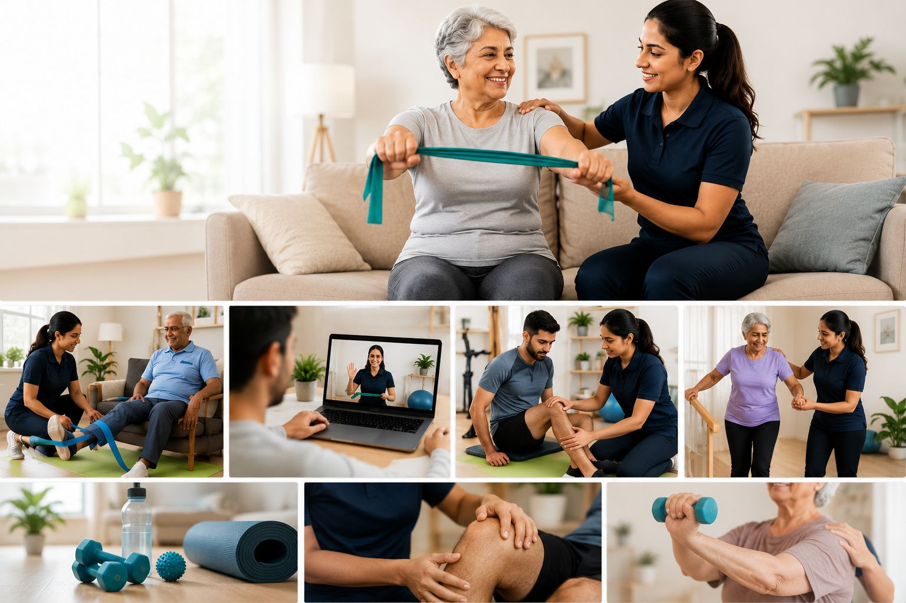
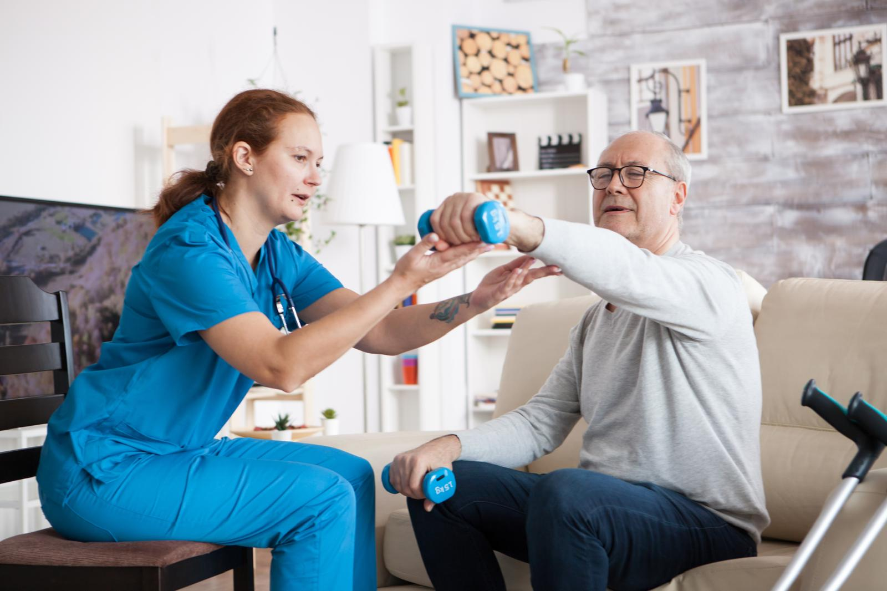

Free 15-Min Consultation
Start with a short assessment to discuss symptoms, goals and the best next step for your care.
Book free consultation →Book one-on-one virtual physiotherapy, in-home treatment in Ottawa, home clinic room care and person-to-person physiotherapy with Drashti Chauhan for back pain, sports injuries, pelvic floor concerns, post-surgery rehab and guided home exercise.

High-intent care pathways built around assessment, education, progressive exercise and measurable improvement.
Start with a short assessment to discuss symptoms, goals and the best next step for your care.
Book free consultation →Online assessment, movement screening and guided exercise for back pain, neck pain, joint stiffness and mobility limitations.
Book virtual care →In-home treatment in Ottawa is available for patients who prefer hands-on support, privacy and care in a familiar setting.
Book in-home care →Structured rehab plans after surgery, fracture, injury or long periods of inactivity, with progressions that match your stage of healing.
Book post-surgery rehab →Non-invasive physiotherapy support for lower back pain, neck pain, shoulder pain, knee pain and recurring muscle tension.
Book pain management →Return-to-activity programs for sprains, tendon pain, overuse injuries, weekend-athlete injuries and performance setbacks.
Book sports injury care →
Support for pelvic floor concerns, women's health, prenatal and postpartum recovery, diastasis recti and core-related conditions.
Book pelvic floor care →Our specialized rehabilitation services are designed to help you recover from common car accident injuries, such as sprains, pain, whiplash, concussions, fractures, ligament tears, and more.
Book MVA rehab →Virtual Physio helps Ottawa patients access physiotherapy through virtual appointments, in-home treatment, home clinic room visits and person-to-person care. If you are searching for physiotherapy in Ottawa, in home treatment in Ottawa, pelvic floor physiotherapy near me or home physiotherapy support, this care model is designed to make booking simple and recovery practical.
Every appointment focuses on clear assessment, safe movement, education you can understand and exercises you can actually follow at home.
A dedicated, patient-first physiotherapist focused on evidence-based care and confident recovery.
 Verified Professional
Verified Professional
Physiotherapist
I hold a Bachelor of Physiotherapy degree from India and have gained valuable exposure working as a Physiotherapy Assistant in both long-term care and private practice settings. These experiences helped me understand the diverse rehabilitation needs of individuals across different stages of life.
Patients choose Virtual Physio for convenient access, plain-language education, strong clinical reasoning and a treatment plan that fits real life.
Yes. Virtual physiotherapy can support assessment, education, exercise prescription, pain self-management and progress tracking. If hands-on care or urgent medical review is needed, your physiotherapist will explain the next step.
Yes We proudly provide professional physiotherapy services throughout Ottawa and surrounding communities. Whether you are looking for in-home physiotherapy, rehabilitation services, mobility training, pain management, or post-surgical recovery, our physiotherapists can travel to your location for convenient one-on- one care. Our service areas include Ottawa, Kanata, Stittsville, Barrhaven, Nepean, Orleans, Gloucester, Westboro, Centretown, Alta Vista, Vanier, Riverside South, Findlay Creek, Manotick, Greely, Rockcliffe Park, Beacon Hill, Blackburn Hamlet, Riverside Park, Hunt Club, Carlington, Hintonburg, The Glebe, Sandy Hill, Overbrook, Elmvale Acres, South Keys, Bells Corners, and nearby communities throughout the Ottawa region.
Use the booking form, call +1 (343) 202-4226 or send a WhatsApp message. Share your service, symptoms, preferred date and contact information for follow-up confirmation.